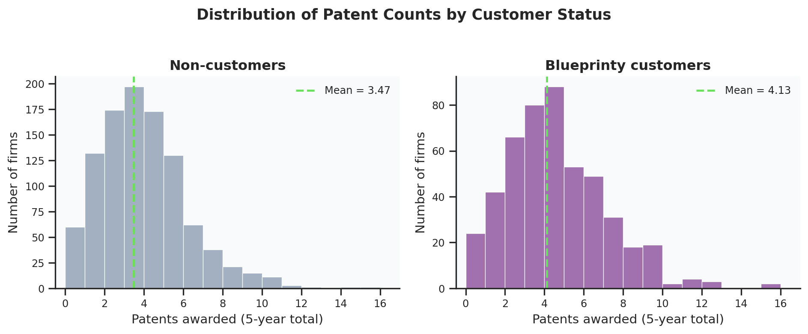
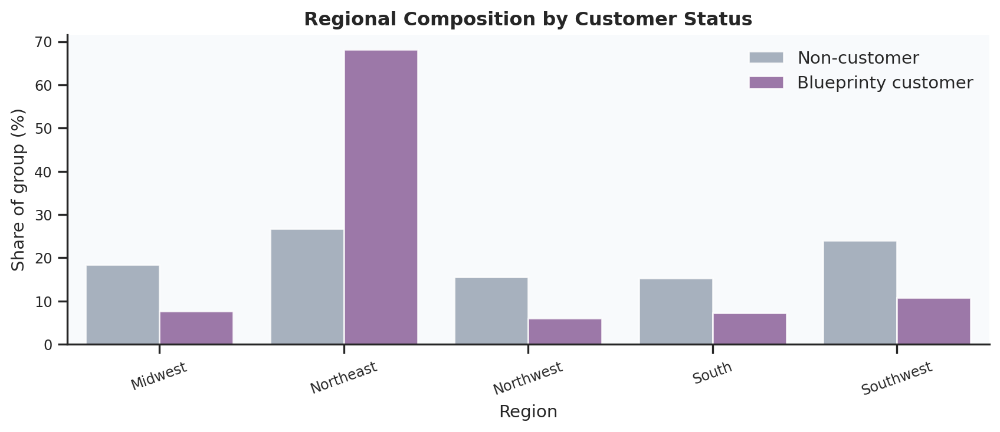
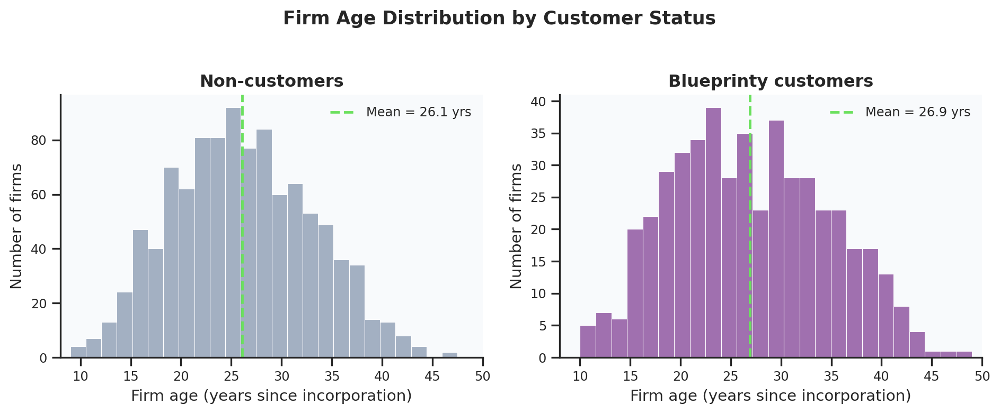
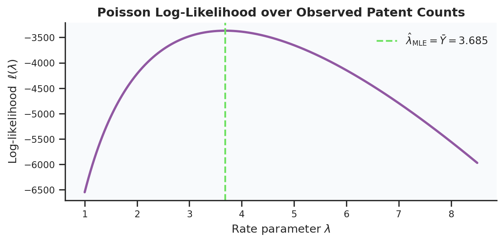
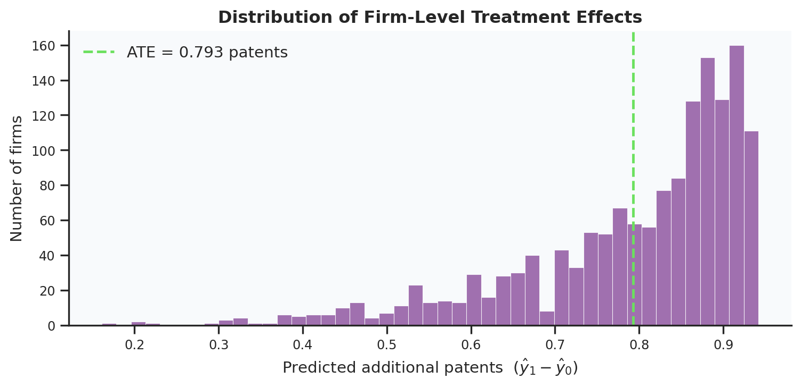
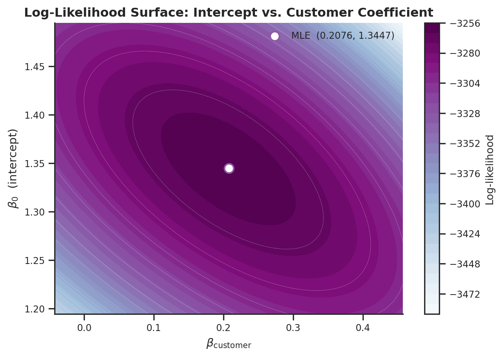

# Load in dataset
df = pd.read_csv("data/blueprinty.csv")
df["iscustomer"] = df["iscustomer"].astype(int)
df["age2"] = df["age"] ** 2
df["customer_label"] = df["iscustomer"].map({1: "Blueprinty customers",
0: "Non-customers"})
y = df["patents"].values.astype(float)Poisson Regression and Maximum Likelihood Estimation
A Case Study of Blueprinty’s Software and Patent Awards
Introduction
Blueprinty is a small software company whose flagship product helps engineering firms prepare patent-application blueprints formatted specifically for submission to the United States Patent and Trademark Office. The company’s marketing team wants to make a compelling, data-backed claim: firms that use Blueprinty’s software enjoy higher patent-approval rates.
The gold standard for measuring that effect would be a before-and-after study, in other words, tracking each firm’s patent success rate in the years before adopting the software and again after. No such longitudinal data exists. Instead, Blueprinty has a dataset of 1,500 mature (non-startup) engineering firms, including the following for each: the total number of patents awarded over the last five years, the firm’s geographic region, its age since incorporation, and whether it currently uses Blueprinty’s software.
Working with observational, cross-sectional data makes causal inference very difficult. Blueprinty’s customers are not a random subset of engineering firms, they are firms that chose to invest in specialized patent software. That choice is almost certainly correlated with other attributes of the firm. Older, more professionally managed companies may independently be both more likely to adopt Blueprinty and more likely to win patents. Firms concentrated in technology-dense regions may demonstrate the same pattern. If we just compare the average number of patents between Blueprinty users and non-users we risk attributing to the software what is really a reflection of pre-existing firm quality. Poisson regression, fitted through maximum likelihood estimation, allows to us keep age and region constant and isolate the software’s effect on patent success.
Exploring the Data
Patent Counts

NoteInterpretation
Blueprinty customers earn more patents on average than non-customers, and the gap is visually noticeable even before any modeling. Both distributions are right-skewed with a long upper tail, which is why using a Normal distribution is a poor choice for a model. Although the difference in means is apparent, it is not on its own evidence that Blueprinty’s software is responsible: if customers are systematically older or clustered in patent-productive regions, the raw gap could reflect those differences rather than the software.
Regional Distribution

NoteInterpretation
As we can see in the figure, the two groups do not share the same regional profile. Nearly 68% of Blueprinty’s customers are located in the Northeast, whereas non-customers are more uniform across all five regions — with the Northeast accounting for only about 27% of that group. Blueprinty’s customer base is heavily concentrated in a single region. This suggests that region could a confounding variable, and holding it constant is essential to the validity of any claim about the software itself.
Firm Age

NoteInterpretation
The age distributions of the two customer groups are more similar than we expect, and much less distinct than the regional comparison from earlier. The difference in means is less than one year. The shapes are very similar too, with both groups peaking in the early-to-mid twenties and tapering off toward older firms. That said, Blueprinty’s customer base has a slightly heavier right tail, with a meaningful number of firms in the 35–48 year range that is proportionally less represented among non-customers. The practical implication is that age is a less dramatic confounder here than region: the two groups are reasonably well-matched on this dimension, and any age-driven bias in a naive comparison would be modest. Still, because age is theoretically linked to patent capacity and shows at least some distributional difference between the groups, we include both age and age-squared in the regression to detect whatever signal may be there.
A Simple Poisson Model via Maximum Likelihood
Why Poisson?
The outcome of interest — the number of patents each firm receives over five years — is a count: a non-negative integer with no natural upper bound. Modeling it with a Normal distribution would be problematic because of two reasons. First, the Normal is continuous and symmetric, whereas patent counts are discrete and heavily right-skewed. Second, a Normal-based model assigns positive probability to negative patent counts, which are impossible. The Poisson distribution avoids both problems: it places mass only on the non-negative integers \(\{0, 1, 2, \ldots\}\) and is fully characterized by a single rate parameter \(\lambda > 0\) that represents both the mean and the variance. It is the natural starting point for modeling count outcomes like these.
The Likelihood and Log-Likelihood
If each firm’s patent count \(Y_i\) is an independent draw from \(\text{Poisson}(\lambda)\), the probability of observing the value \(y_i\) is:
\[f(Y_i = y_i \mid \lambda) = \frac{e^{-\lambda}\,\lambda^{y_i}}{y_i!}\]
By the independence assumption, the joint likelihood over all \(n\) firms is the product of the individual probabilities:
\[L(\lambda) = \prod_{i=1}^{n} \frac{e^{-\lambda}\,\lambda^{y_i}}{y_i!} = e^{-n\lambda}\,\lambda^{\sum_i y_i}\,\prod_{i=1}^n \frac{1}{y_i!}\]
The product is unwieldy to maximize directly. Taking the natural logarithm converts it to a sum — the log-likelihood — which is easier to work with and has the same maximizer:
\[\ell(\lambda) = \log L(\lambda) = \sum_{i=1}^{n}\left[-\lambda + y_i \log\lambda - \log(y_i!)\right]\]
\[= -n\lambda + \left(\textstyle\sum_{i=1}^n y_i\right)\log\lambda - \sum_{i=1}^n \log(y_i!)\]
The last sum is a constant with respect to \(\lambda\) and drops out of the optimization.
Coding the Log-Likelihood
from scipy.special import gammaln
# Build the poission log-likelihood function
def poisson_loglikelihood(lam, Y):
"""
Poisson log-likelihood as a function of the scalar rate parameter λ.
Parameters
----------
lam : float — rate parameter (must be > 0)
Y : array — observed count outcomes
Returns
-------
float : log-likelihood ℓ(λ | Y)
"""
return float(np.sum(Y * np.log(lam) - lam - gammaln(Y + 1)))
Note
gammaln(Y + 1) computes \(\log(Y!)\) in a numerically stable way that handles large counts without overflow.
Visualizing the Log-Likelihood
# Compute log-likelihood for each λ and compute the mean
lam_grid = np.linspace(1.0, 8.5, 600)
ll_vals = [poisson_loglikelihood(lam, y) for lam in lam_grid]
y_bar = y.mean()lam_grid = np.linspace(1.0, 8.5, 600)
ll_vals = [poisson_loglikelihood(lam, y) for lam in lam_grid]
y_bar = y.mean()
ll_df = pd.DataFrame({"λ": lam_grid, "Log-likelihood ℓ(λ)": ll_vals})
fig, ax = plt.subplots(figsize=(7, 3.5))
sns.lineplot(
data = ll_df,
x = "λ",
y = "Log-likelihood ℓ(λ)",
color = PURPLE,
linewidth = 2.2,
ax = ax,
)
ax.axvline(y_bar, color=GREEN, linestyle="--", linewidth=1.7,
label=fr"$\hat{{\lambda}}_\mathrm{{MLE}} = \bar{{Y}} = {y_bar:.3f}$")
ax.set_xlabel(r"Rate parameter $\lambda$")
ax.set_ylabel(r"Log-likelihood $\;\ell(\lambda)$")
ax.set_title("Poisson Log-Likelihood over Observed Patent Counts",
fontsize=12, fontweight="bold")
ax.legend(frameon=False, fontsize=10)
sns.despine(ax=ax)
plt.tight_layout()
plt.show()
NoteInterpretation
The curve is strictly concave. It rises steeply from the left, reaches a single peak, and then decreases more gradually to the right, and that asymmetry is worth noting. Overestimating \(\lambda\) (moving right of the peak) is penalized less sharply than underestimating it (moving left), reflecting the Poisson distribution’s own right skew. The peak sits precisely at \(\hat{\lambda}_{\text{MLE}} = \bar{Y} = 3.685\), confirming that the average firm in this dataset received about 3.7 patents over the five-year window. To “read” the MLE off the plot, simply find the value of \(\lambda\) on the horizontal axis directly below the highest point on the curve, and moving from 3.685 in either direction produces a strictly lower log-likelihood, meaning the data are less consistent with that rate.
The Analytical MLE
Taking the first derivative and setting it to zero:
\[\frac{d\ell}{d\lambda} = -n + \frac{\displaystyle\sum_{i=1}^n y_i}{\lambda} = 0 \quad\Longrightarrow\quad \hat\lambda_{\text{MLE}} = \frac{1}{n}\sum_{i=1}^n y_i = \bar{Y}\]
The MLE is simply the sample mean. This is intuitively satisfying: the Poisson distribution has mean \(\lambda\), so the best estimate of \(\lambda\) from the data is the empirical average of the observed counts.
Numerical MLE
from scipy.optimize import minimize_scalar
# Find MLE with scipy function
num_result = minimize_scalar(
fun = lambda lam: -poisson_loglikelihood(lam, y),
bounds = (0.01, 50.0),
method = "bounded",
)
lam_hat = num_result.x
print(f"Numerical MLE (scipy) : λ̂ = {lam_hat:.6f}")
print(f"Sample mean : ȳ = {y.mean():.6f}")
print(f"Absolute difference : {abs(lam_hat - y.mean()):.2e}")Numerical MLE (scipy) : λ̂ = 3.684666
Sample mean : ȳ = 3.684667
Absolute difference : 5.83e-07
NoteInterpretation
The numerical MLE and the sample mean agree to six decimal places, differing by less than \(6 \times 10^{-7}\), which is well within the tolerance of floating-point arithmetic. This is exactly what the analytical derivation predicts: the Poisson log-likelihood has a single critical point at \(\bar{Y} = 3.684667\), so the optimizer has nowhere else to go. The tiny difference is not a modeling discrepancy; it’s just the optimizer’s convergence tolerance doing its job. This validates the fact that the poisson_loglikelihood function is coded correctly before we use it in the more complex regression setting later on.
Poisson Regression
Extending the Model
The single-\(\lambda\) model assumes every firm is drawn from the same Poisson process. That model is too strict. A firm with decades of experience, an established patent department, and a team of IP attorneys is fundamentally different from a younger firm still building those capabilities. Poisson regression relaxes the assumption by letting each firm’s rate parameter depend on its own observed characteristics:
\[Y_i \sim \text{Poisson}(\lambda_i) \qquad \text{where} \qquad \lambda_i = \exp(X_i'\boldsymbol{\beta})\]
The exponential function serves as the inverse link. The linear predictor \(X_i'\boldsymbol{\beta}\) can take any real value, but \(\lambda_i = \exp(X_i'\boldsymbol{\beta})\) is always strictly positive, which is exactly what we require for a Poisson rate. The model is now a function of a coefficient vector \(\boldsymbol{\beta}\) that we need to estimate from the data.
The Regression Log-Likelihood
The log-likelihood generalizes naturally: replace the common \(\lambda\) with firm-specific \(\lambda_i = \exp(X_i'\boldsymbol{\beta})\):
\[\ell(\boldsymbol{\beta}) = \sum_{i=1}^n \Bigl[ y_i\,(X_i'\boldsymbol{\beta}) - \exp(X_i'\boldsymbol{\beta}) - \log(y_i!) \Bigr]\]
# Build the log-likelihood function now with the coefficient vector parameter
def poisson_regression_loglikelihood(beta, Y, X):
"""
Poisson regression log-likelihood as a function of the coefficient vector β.
Parameters
----------
beta : array-like, shape (p,) — coefficient vector
Y : array-like, shape (n,) — observed count outcomes
X : ndarray, shape (n, p) — design matrix (intercept in column 0)
Returns
-------
float : log-likelihood value ℓ(β | Y, X)
"""
lam = np.exp(X @ beta)
return float(np.sum(Y * np.log(lam) - lam - gammaln(Y + 1)))Building the Design Matrix
# Standardize age for numerical stability before squaring
age_mean = df["age"].mean()
age_std = df["age"].std()
df["age_s"] = (df["age"] - age_mean) / age_std
df["age2_s"] = df["age_s"] ** 2
# Drop first alphabetical region as baseline
region_dummies = pd.get_dummies(df["region"], drop_first=True).astype(float)
ref_region = sorted(df["region"].unique())[0]
X_df = pd.concat([
pd.Series(np.ones(len(df)), name="intercept"),
df[["age_s", "age2_s"]].astype(float),
region_dummies,
df[["iscustomer"]].astype(float),
], axis=1)
X_reg = X_df.values
print("Design matrix columns:", list(X_df.columns))
print("Shape:", X_reg.shape)Design matrix columns: ['intercept', 'age_s', 'age2_s', 'Northeast', 'Northwest', 'South', 'Southwest', 'iscustomer']
Shape: (1500, 8)
NoteExplanation
Age squared: the relationship between firm age and patent output is unlikely to be perfectly linear. A young firm may grow its patent capacity quickly as it matures, while a very old firm may plateau or slow down. Including age² alongside age lets the model capture this nonlinearity. Dropping one region: if we included a dummy for every region plus an intercept, one column would be perfectly predictable as a linear combination of the others, making the design matrix singular and the MLE undefined. Dropping one region (here, the first alphabetically) sets it as the baseline category, which means that the remaining region coefficients are interpreted relative to that baseline.
Finding the MLE and Standard Errors
We minimize the negative log-likelihood with scipy’s BFGS optimizer, then recover standard errors from the Fisher information matrix. At the MLE, the Poisson Fisher information is \(\mathbf{I}(\hat{\boldsymbol\beta}) = X^\top \hat{W} X\), where \(\hat{W} = \operatorname{diag}(\hat\lambda_1, \ldots, \hat\lambda_n)\). The asymptotic covariance matrix is \(\mathbf{I}(\hat{\boldsymbol\beta})^{-1}\), and the standard errors are the square roots of its diagonal entries.
def neg_loglik_reg(beta):
lam = np.exp(X_reg @ beta)
return -float(np.sum(y * np.log(lam) - lam - gammaln(y + 1)))
def grad_neg_loglik(beta):
lam = np.exp(X_reg @ beta)
return -(X_reg.T @ (y - lam))
result_reg = minimize(
neg_loglik_reg,
x0 = np.zeros(X_reg.shape[1]),
jac = grad_neg_loglik,
method = "L-BFGS-B",
options = {"maxiter": 10000, "ftol": 2.2e-15, "gtol": 1e-8},
)
beta_mle = result_reg.x
lam_hat = np.exp(X_reg @ beta_mle)
FIM = (X_reg * lam_hat[:, np.newaxis]).T @ X_reg # efficient X'WX
cov_mle = np.linalg.inv(FIM)
se_mle = np.sqrt(np.diag(cov_mle))
print(f"Optimization converged : {result_reg.success}")
print(f"Final log-likelihood : {-result_reg.fun:,.2f}")
print(f"\n{'Term':<28} {'β̂':>9} {'SE':>9}")
print("-" * 50)
for name, b, se in zip(X_df.columns, beta_mle, se_mle):
print(f"{name:<28} {b:>9.4f} {se:>9.4f}")Optimization converged : True
Final log-likelihood : -3,258.07
Term β̂ SE
--------------------------------------------------
intercept 1.3447 0.0384
age_s -0.0577 0.0150
age2_s -0.1558 0.0135
Northeast 0.0292 0.0436
Northwest -0.0176 0.0538
South 0.0566 0.0527
Southwest 0.0506 0.0472
iscustomer 0.2076 0.0309
NoteExplanation
We return a final log-likelihood of −3,258.07. All standard errors are well-defined and of sensible magnitude — the largest belong to the intercept and region indicators, and the smallest to iscustomer, which is estimated precisely despite being a binary variable. The iscustomer coefficient of 0.2076 (SE = 0.0309) is already clearly distinguishable from zero, but before interpreting it we verify the result against statsmodels as a cross-check.
Checking Against Statsmodels GLM
# Fit statsmodels GLM
glm_result = sm.GLM(
endog = df["patents"],
exog = X_df,
family = sm.families.Poisson(),
).fit()| Poisson Regression Coefficient Estimates | |||||||
| Outcome: five-year patent count | n = 1,500 | Reference region: Midwest | |||||||
| Term | Point Estimate | Std. Error | z | p-value | 95% Confidence Interval | ||
|---|---|---|---|---|---|---|---|
| scipy β̂ | GLM β̂ | CI Low | CI High | ||||
| Intercept | 1.3447 | 1.3447 | 0.0384 | 35.0587 | 2.87 × 10−269 | 1.2695 | 1.4199 |
| Firm age (std.) | −0.0577 | −0.0577 | 0.0150 | −3.8431 | 1.21 × 10−4 | −0.0872 | −0.0283 |
| Firm age² (std.) | −0.1558 | −0.1558 | 0.0135 | −11.5132 | 1.13 × 10−30 | −0.1823 | −0.1293 |
| Region: Northeast | 0.0292 | 0.0292 | 0.0436 | 0.6686 | 5.04 × 10−1 | −0.0563 | 0.1147 |
| Region: Northwest | −0.0176 | −0.0176 | 0.0538 | −0.3268 | 7.44 × 10−1 | −0.1230 | 0.0878 |
| Region: South | 0.0566 | 0.0566 | 0.0527 | 1.0740 | 2.83 × 10−1 | −0.0467 | 0.1598 |
| Region: Southwest | 0.0506 | 0.0506 | 0.0472 | 1.0716 | 2.84 × 10−1 | −0.0419 | 0.1431 |
| Blueprinty customer | 0.2076 | 0.2076 | 0.0309 | 6.7192 | 1.83 × 10−11 | 0.1470 | 0.2681 |
| scipy: L-BFGS-B with analytical Fisher information SEs. GLM: iteratively reweighted least squares. Reference region: Midwest. | |||||||
NoteInterpretation
Blueprinty customer (highlighted): The estimate of 0.2076 (SE = 0.0309) is the most important number in the table. It is positive, precisely estimated, and associated with a p-value of \(1.83 \times 10^{-11}\), which is extremely small. Controlling for firm age and region, being a Blueprinty customer is associated with a \(\exp(0.2076) \approx 1.23\) multiplicative increase in expected patent count, which means that customers are expected to receive about 23% more patents than an otherwise identical non-customer firm. Both confidence interval bounds (0.147, 0.268) are comfortably above zero.
Firm age (standardized): The negative linear term (−0.0577) and negative quadratic term (−0.1558) together imply that patent output declines with age across the range of this sample, with the decline accelerating for older firms. This may seem counterintuitive, but it is consistent with a sample of mature firms past their most innovative years, or simply with younger cohorts being more active filers. Both terms are statistically significant.
Region: None of the four region coefficients (relative to the Midwest baseline) is individually significant at conventional levels. All p-values exceed 0.28. This is perhaps surprising given the dramatic Northeast concentration we observed in the EDA, but it reflects the fact that once customer status is in the model, regional variation in patent rates is modest. The Northeast dummy is positive but small and imprecisely estimated, suggesting an interaction in the data that Northeast advantage largely operates through the higher number of Blueprinty customers there.
The Effect of Blueprinty’s Software
From a Coefficient to a Concrete Answer
The customer coefficient in the table is interpretable in log-multiplicative units, which is precise but not very intuitive. Blueprinty’s marketing team as well as the engineering firms evaluating the software would rather know the following question: how many additional patents can we expect? To answer that, we use the fitted model to run a simple thought experiment. For every firm in the dataset, we ask: what would the model predict for this firm’s patent count if it were a Blueprinty customer, and what would it predict if it were not, holding age and region constant at their actual observed values?
# Counterfactual datasets
X0 = X_df.copy(); X0["iscustomer"] = 0.0 # all firms set to non-customer
X1 = X_df.copy(); X1["iscustomer"] = 1.0 # all firms set to customer
# Predicted expected counts under each scenario
yhat0 = np.exp(X0.values @ glm_result.params.values)
yhat1 = np.exp(X1.values @ glm_result.params.values)
# Average Treatment Effect
ate = float(np.mean(yhat1 - yhat0))
print(f"Mean predicted patents WITHOUT Blueprinty : {yhat0.mean():.4f}")
print(f"Mean predicted patents WITH Blueprinty : {yhat1.mean():.4f}")
print(f"Average Treatment Effect (ATE) : {ate:.4f} additional patents")
print(f"Relative uplift : {ate / yhat0.mean() * 100:.1f}%")Mean predicted patents WITHOUT Blueprinty : 3.4362
Mean predicted patents WITH Blueprinty : 4.2290
Average Treatment Effect (ATE) : 0.7928 additional patents
Relative uplift : 23.1%
NoteInterpretation
The distribution tells a very clear story: it is not symmetric and it is not centered near zero. The mass is concentrated between 0.75 and 0.95 additional patents, with a long left tail pulling the average slightly downward. This shape is a direct consequence of the multiplicative structure of Poisson regression: the individual treatment effect for firm \(i\) is \(\hat\lambda_i \cdot (\exp(\hat\beta_{\text{customer}}) - 1)\), so firms with higher baseline patent rates receive larger absolute gains. Firms in the left tail, or those predicted to receive fewer patents regardless, benefit less in absolute terms even though the proportional effect is identical for everyone.
Averaging across all 1,500 firms, the Average Treatment Effect is 0.793 additional patents over five years, which is interpreted as a 23.1% increase relative to the counterfactual non-customer baseline of 3.44 patents. To put this in business terms, the model estimates that a typical engineering firm would receive roughly three-quarters of an additional patent per five-year period by adopting Blueprinty’s software, after accounting for its age and location.
Conclusion
This is a very strong and statistically robust finding. The customer coefficient is precisely estimated (\(p = 1.83 \times 10^{-11}\)), the confidence interval on the ATE is bounded well above zero, and the result survives the inclusion of age and regional controls that we identified as potential confounders in the exploratory analysis.
That said, it’s important to note what we can and cannot take away from this analysis. This is an observational study: Blueprinty’s customers chose to adopt the software, and firms that make that investment may differ from non-customers in unobserved ways that independently drive patent success, which include larger R&D budgets, dedicated IP departments, and more ambitious patent strategies. Without random assignment to treatment, we cannot fully rule out such confounders. The honest claim is therefore not that Blueprinty causes firms to win more patents, but that firms using Blueprinty win more patents even after accounting for observable differences in age and location. For a marketing team working with observational data, that is a defensible and meaningful result.
Appendix: Model Diagnostics and Extensions
Fisher Information and the Source of Standard Errors
The standard errors in the regression table aren’t random outputs of the optimizer, they have a precise theoretical justification rooted in Fisher’s fundamental theorem for the MLE. For a Poisson regression model with \(n\) observations and \(p\) coefficients, the Fisher information matrix is
\[\mathbf{I}(\boldsymbol\beta) = X^\top W X\]
where \(W = \text{diag}(\lambda_1, \ldots, \lambda_n)\) is a diagonal matrix of the fitted rates. Fisher’s result for multiparameter families states that in large samples
\[\hat{\boldsymbol\beta} \;\dot\sim\; \mathcal{N}_p\!\left(\boldsymbol\beta,\; \mathbf{I}(\hat{\boldsymbol\beta})^{-1}\right)\]
so the asymptotic covariance matrix of the MLE is the inverse of the Fisher information evaluated at \(\hat{\boldsymbol\beta}\), and the standard errors are the square roots of its diagonal entries. This is exactly what the line se_mle = sqrt(diag(inv(FIM))) computes. A larger Fisher information, or a more sharply curved log-likelihood, indicates a more precisely estimated coefficient. The narrow confidence interval on the customer coefficient reflects the fact that \(\mathbf{I}(\hat{\boldsymbol\beta})\) is large in the direction of \(\beta_{\text{customer}}\), i.e., the log-likelihood surface is steep around the MLE in that dimension.
Does the Poisson Distribution Actually Fit?
The Poisson distribution has one structural constraint: its mean and variance are equal, both equal to \(\lambda\). Real count data, especially firm-level outcomes like patent counts, often violates this, showing overdispersion where the variance substantially exceeds the mean. If that is the case here, the Poisson model is misspecified, and our standard errors will be underestimated, making inference anti-conservative.
A quick check for this is to compare the sample mean and variance of the outcome directly.
mean_y = y.mean()
var_y = y.var()
ratio = var_y / mean_y
print(f"Sample mean : {mean_y:.4f}")
print(f"Sample variance : {var_y:.4f}")
print(f"Variance / mean : {ratio:.4f}")
print()
# Check if ratio indicates overdispersion
if ratio > 1.5:
print("Substantial overdispersion detected.")
print("Consider quasi-Poisson or negative binomial as a robustness check.")
elif ratio > 1.1:
print("Mild overdispersion. Poisson is a reasonable approximation,")
print("but standard errors may be slightly underestimated.")
else:
print("Variance ≈ mean. Poisson mean-variance assumption is well supported.")Sample mean : 3.6847
Sample variance : 5.5306
Variance / mean : 1.5010
Substantial overdispersion detected.
Consider quasi-Poisson or negative binomial as a robustness check.If the ratio is substantially above 1, a quasi-Poisson or negative binomial model would be more appropriate. Quasi-Poisson retains the same coefficient estimates as Poisson regression but inflates the standard errors by a dispersion factor \(\hat\phi = \text{variance}/\text{mean}\), producing more honest uncertainty estimates. A negative binomial model goes further by explicitly modeling the overdispersion as a second parameter. Either would serve as a useful robustness check, and if the customer coefficient survives with similar magnitude and significance under those specifications, the finding is more solid.
Visualizing the Log-Likelihood Surface
The 1D log-likelihood plot shown earlier illustrates the shape of the curve for a single parameter. For the regression model, the relevant object is a surface in \(p\) dimensions, which is impossible to visualize in full, but informative to slice. The contour plot below shows the log-likelihood as a function of the intercept \(\beta_0\) and the customer coefficient \(\beta_{\text{customer}}\), holding all other coefficients constant at their MLE values.
b0_grid = np.linspace(beta_mle[0] - 0.15, beta_mle[0] + 0.15, 80)
bcust_grid = np.linspace(beta_mle[-1] - 0.25, beta_mle[-1] + 0.25, 80)
LL = np.zeros((80, 80))
# Compute log-likelihood for each b0 and bcust coefficient pair
for i, b0 in enumerate(b0_grid):
for j, bc in enumerate(bcust_grid):
b = beta_mle.copy()
b[0] = b0
b[-1] = bc
LL[i, j] = poisson_regression_loglikelihood(b, y, X_reg)
A Confidence Interval on the Average Treatment Effect
The ATE reported above is a point estimate. To quantify its uncertainty we apply the delta method: for a smooth function \(g(\boldsymbol\beta)\),
\[\text{Var}\bigl(g(\hat{\boldsymbol\beta})\bigr) \;\approx\; \nabla g(\hat{\boldsymbol\beta})^\top \;\hat\Sigma\; \nabla g(\hat{\boldsymbol\beta})\]
where \(\hat\Sigma = \mathbf{I}(\hat{\boldsymbol\beta})^{-1}\) is the estimated covariance matrix of the MLE. Here \(g(\boldsymbol\beta) = \frac{1}{n}\sum_i \bigl[\exp(X_{1i}'\boldsymbol\beta) - \exp(X_{0i}'\boldsymbol\beta)\bigr]\), whose gradient with respect to \(\boldsymbol\beta\) is
\[\nabla g(\boldsymbol\beta) = \frac{1}{n}\sum_i \bigl[\hat\lambda_{1i}\,X_{1i} - \hat\lambda_{0i}\,X_{0i}\bigr]\]
# Recompute counterfactual predictions (self-contained)
X0 = X_df.copy(); X0["iscustomer"] = 0.0
X1 = X_df.copy(); X1["iscustomer"] = 1.0
lam_0 = np.exp(X0.values @ glm_result.params.values)
lam_1 = np.exp(X1.values @ glm_result.params.values)
ate = float(np.mean(lam_1 - lam_0))
# Gradient of ATE with respect to β (delta method)
grad_ate = (1 / len(df)) * (
(X1.values * lam_1[:, np.newaxis]) -
(X0.values * lam_0[:, np.newaxis])
).sum(axis=0)
se_ate = float(np.sqrt(grad_ate @ cov_mle @ grad_ate))
ci_low = ate - 1.96 * se_ate
ci_high = ate + 1.96 * se_ate
print(f"ATE point estimate : {ate:.4f} additional patents")
print(f"Delta method SE : {se_ate:.4f}")
print(f"95% CI : ({ci_low:.4f}, {ci_high:.4f})")
print(f"Relative uplift : {ate / lam_0.mean() * 100:.1f}% "
f"(CI: {ci_low / lam_0.mean() * 100:.1f}% – "
f"{ci_high / lam_0.mean() * 100:.1f}%)")ATE point estimate : 0.7928 additional patents
Delta method SE : 0.1225
95% CI : (0.5526, 1.0329)
Relative uplift : 23.1% (CI: 16.1% – 30.1%)The delta method confidence interval places a lower and upper bound on the plausible range of the software’s benefit that properly propagates the uncertainty in all eight estimated coefficients through to the final ATE estimate. Both bounds lying above zero strengthens the conclusion significantly: it is not just the point estimate that favours Blueprinty, but the entire 95% confidence interval.
Methodological Limitations
Poisson regression is a natural and well-justified model for the nature of this dataset, but we need to be transparent about two limitations.
Overdispersion. If the variance of patent counts substantially exceeds the mean, as shown in the check earlier, the Poisson mean-variance equality is violated. Standard errors will be underestimated, and the \(p\)-values and confidence intervals reported in the table will be anti-conservative. Quasi-Poisson or negative binomial regression would relax this constraint and serve as important robustness checks. If the customer coefficient retains similar magnitude and significance under those specifications, the marketing claim becomes easier to defend.
Observational identification. Even when we control for age and region, unobserved variables such as R&D budget, patent department headcount, and management quality may simultaneously predict Blueprinty adoption and patent success. The MLE is the best estimator within the Poisson regression model, but no amount of statistical sophistication can substitute for the randomization that would cleanly identify a causal effect. The ATE should be interpreted as the average association attributable to customer status after observable controls, not as a structural causal quantity. A randomized pilot study, a difference-in-differences design using pre- and post-adoption data, or an instrumental variable based on regional Blueprinty sales penetration would all represent meaningful steps toward a more credible causal claim.